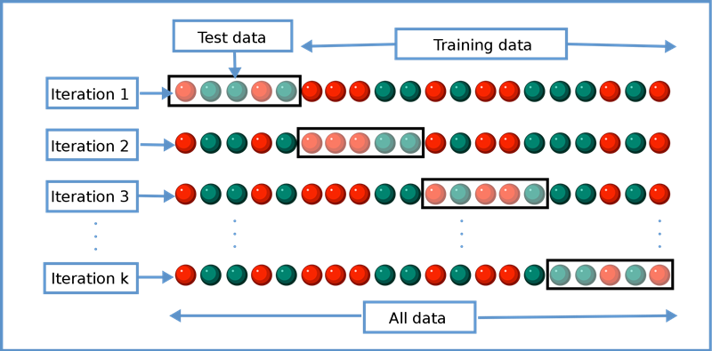

Cross-validation
Important
This tutorial is very similar to one of the previous tutorials, but uses a different data (we used RHC data here). We are revisiting concepts related to prediction before introducing ideas related to machine learning.
Now, we will describe the ideas of cross-validation.
Load previously saved data
k-fold cross-vaildation
See (Wikipedia 2023)

k = 5
dim(ObsData)
#> [1] 5735 52
set.seed(567)
# create folds (based on outcome)
folds <- createFolds(ObsData$Length.of.Stay, k = k,
list = TRUE, returnTrain = TRUE)
mode(folds)
#> [1] "list"
dim(ObsData)*4/5 # approximate training data size
#> [1] 4588.0 41.6
dim(ObsData)/5 # approximate test data size
#> [1] 1147.0 10.4
length(folds[[1]])
#> [1] 4588
length(folds[[5]])
#> [1] 4587
str(folds[[1]])
#> int [1:4588] 1 2 4 6 7 8 9 10 11 13 ...
str(folds[[5]])
#> int [1:4587] 1 3 5 6 7 8 10 11 12 13 ...Calculation for Fold 1
fold.index <- 1
fold1.train.ids <- folds[[fold.index]]
head(fold1.train.ids)
#> [1] 1 2 4 6 7 8
fold1.train <- ObsData[fold1.train.ids,]
fold1.test <- ObsData[-fold1.train.ids,]
out.formula1
#> Length.of.Stay ~ Disease.category + Cancer + Cardiovascular +
#> Congestive.HF + Dementia + Psychiatric + Pulmonary + Renal +
#> Hepatic + GI.Bleed + Tumor + Immunosupperssion + Transfer.hx +
#> MI + age + sex + edu + DASIndex + APACHE.score + Glasgow.Coma.Score +
#> blood.pressure + WBC + Heart.rate + Respiratory.rate + Temperature +
#> PaO2vs.FIO2 + Albumin + Hematocrit + Bilirubin + Creatinine +
#> Sodium + Potassium + PaCo2 + PH + Weight + DNR.status + Medical.insurance +
#> Respiratory.Diag + Cardiovascular.Diag + Neurological.Diag +
#> Gastrointestinal.Diag + Renal.Diag + Metabolic.Diag + Hematologic.Diag +
#> Sepsis.Diag + Trauma.Diag + Orthopedic.Diag + race + income +
#> RHC.use
model.fit <- lm(out.formula1, data = fold1.train)
predictions <- predict(model.fit,
newdata = fold1.test)
perform(new.data=fold1.test,
y.name = "Length.of.Stay",
model.fit=model.fit)
#> n p R2 adjR2 RMSE
#> [1,] 1147 64 0.051 -0.004 24.86Calculation for Fold 2
fold.index <- 2
fold1.train.ids <- folds[[fold.index]]
head(fold1.train.ids)
#> [1] 2 3 4 5 6 7
fold1.train <- ObsData[fold1.train.ids,]
fold1.test <- ObsData[-fold1.train.ids,]
model.fit <- lm(out.formula1, data = fold1.train)
predictions <- predict(model.fit,
newdata = fold1.test)
perform(new.data=fold1.test,
y.name = "Length.of.Stay",
model.fit=model.fit)
#> n p R2 adjR2 RMSE
#> [1,] 1147 64 0.066 0.011 24.714Using caret package to automate
See (Kuhn 2023)
# Using Caret package
set.seed(504)
# make a 5-fold CV
ctrl<-trainControl(method = "cv",number = 5)
# fit the model with formula = out.formula1
# use training method lm
fit.cv<-train(out.formula1, trControl = ctrl,
data = ObsData, method = "lm")
fit.cv
#> Linear Regression
#>
#> 5735 samples
#> 50 predictor
#>
#> No pre-processing
#> Resampling: Cross-Validated (5 fold)
#> Summary of sample sizes: 4588, 4588, 4587, 4589, 4588
#> Resampling results:
#>
#> RMSE Rsquared MAE
#> 25.05478 0.05980578 15.19515
#>
#> Tuning parameter 'intercept' was held constant at a value of TRUE
# extract results from each test data
summary.res <- fit.cv$resample
summary.resVideo content (optional)
Tip
For those who prefer a video walkthrough, feel free to watch the video below, which offers a description of an earlier version of the above content.
References
Kuhn, Max. 2023. “Model Training and Tuning.” https://topepo.github.io/caret/model-training-and-tuning.html.
Wikipedia. 2023. “Cross-Validation (Statistics).” https://en.wikipedia.org/wiki/Cross-validation_(statistics).